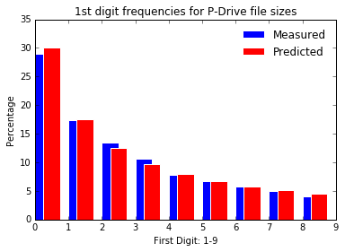
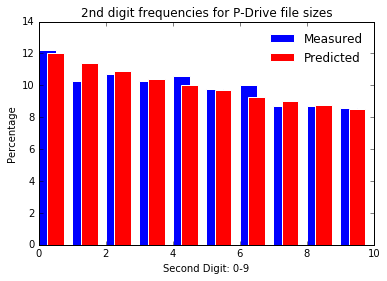

Benford’s Law¶
In [16]:
"""
Exploring Benford's Law by applying it the files sizes on a local hard drive
Note this is a hacky version that works but is very Pythonic
"""
import os
### The significand ranges from 1 thru 9 inclusive (0 is excluded)
FIRST_DIGIT_PERCENTAGES = [
30.1, ## '1'
17.6,
12.5,
9.7,
7.9,
6.7,
5.8,
5.1,
4.5 ## '9'
]
### 2nd and subsequent digits range from 0 thru 9 inclusive (0 is included)
SECOND_DIGIT_PERCENTAGES = [
12.0, ## '0'
11.4,
10.9,
10.4,
10.0,
9.7,
9.3,
9.0,
8.8,
8.5 ## '9'
]
class BenfordDigit(object):
'''
Class for investigating whether given number digits adhere to Benford's Law
Class Attributes:
__experiment_name: <string> unique label for each Benford experiment
__digit_position: <int> significand = 1, 2nd digit, counting from LHS = 2 ...
__digit_count: <dict> tally of numbers encountered in given digit position
__current_number: <int> most recent number reported in digit position, used to
increment the corrsponding entry in digit_count tally
__number_count: <int> sum of all numbers found in a given digit_position
__digit_percent: <list> list of percentages corresponding to relative freqs
for each number for a given digit_position
(1-9 for significand, or 0-9 otherwise)
'''
def __init__(self, experiment_name, digit_position):
self.__experiment_name = experiment_name
self.__digit_position = digit_position
self.__digit_count = {
'0': 0,
'1': 0,
'2': 0,
'3': 0,
'4': 0,
'5': 0,
'6': 0,
'7': 0,
'8': 0,
'9': 0
}
self.__current_number = '1'
self.__number_count = 0
self.__digit_percent = []
def __str__(self):
return ('Experiment: %s Digit position: %i' % (self.__experiment_name,
self.__digit_position))
def __repr__(self):
return str(self)
@property
def experiment_name(self):
return (self.__experiment_name)
@property
def digit_position(self):
return (self.__digit_position)
@property
def digit_count(self):
# return [(k,v) for k,v in sorted([(k,v) for k,v in self.__digit_count.items()])]
return sorted([(k,v) for k,v in self.__digit_count.items()])
@property
def current_number(self):
return self.__current_number
@current_number.setter
def current_number(self, number):
self.__current_number = number
self.__digit_count[self.__current_number] += 1
@property
def number_count (self):
if self.__digit_position == 1:
# return all numbers excl. 0's
return sum(value for key, value in self.__digit_count.items() if key != '0')
else:
return sum(value for key, value in self.__digit_count.items()) ## Simplify!
@property
def digit_percent (self):
self.__digit_percent = []
if self.__digit_position == 1:
# return ratio of all numbers excl. 0's
for i in range(1,10):
d1_percent = round((100.0*self.__digit_count[str(i)]/self.number_count), 1)
self.__digit_percent.append(d1_percent)
return self.__digit_percent
else:
# return ratio of all numbers incl. 0's
for i in range(0,10):
d2_percent = round((100.0*self.__digit_count[str(i)]/self.number_count), 1)
self.__digit_percent.append(d2_percent)
return self.__digit_percent
###--------------------------------------------------------------------------------------------
### Significand
benford1 = BenfordDigit('Local P: Drive Files - Significand', 1)
### 2nd Digit
benford2 = BenfordDigit('Local P: Drive Files - 2nd Digit', 2)
for root, dirs, files in os.walk('P:/'):
for name in files:
filename = os.path.join(root, name)
filesize = os.path.getsize(filename)
digit1Strng = (str(filesize))[0]
benford1.current_number = digit1Strng
if filesize > 9:
benford2.current_number = str(filesize)[1]
# Plot predicted 1st digits frequencies versus actual
# Show plots in notebook (rather than in separate window)
%matplotlib inline
import numpy as np
import matplotlib.pyplot as plt
X = np.arange(len(benford1.digit_percent))
plt.bar(X + 0.0, benford1.digit_percent, facecolor='blue', edgecolor='white',
width=0.5, label="Measured")
plt.bar(X + 0.25, FIRST_DIGIT_PERCENTAGES, facecolor='red', edgecolor='white',
width=0.5, label="Predicted")
plt.title('1st digit frequencies for P-Drive file sizes')
plt.xlabel('First Digit: 1-9')
plt.ylabel('Percentage')
plt.legend(loc='upper right', frameon=False)
plt.show()
print ('\nPredicted 1st Digit Ratios:\t', FIRST_DIGIT_PERCENTAGES)
print ('Observed 1st Digit Ratios:\t', benford1.digit_percent, '\n')

Predicted 1st Digit Ratios: [30.1, 17.6, 12.5, 9.7, 7.9, 6.7, 5.8, 5.1, 4.5]
Observed 1st Digit Ratios: [29.0, 17.4, 13.5, 10.7, 7.8, 6.7, 5.8, 5.0, 4.1]
In [18]:
# 2nd digit frequencies
X = np.arange(len(benford2.digit_percent))
plt.bar(X + 0.0, benford2.digit_percent, facecolor='blue', edgecolor='white',
width=0.5, label="Measured")
plt.bar(X + 0.25, SECOND_DIGIT_PERCENTAGES, facecolor='red', edgecolor='white',
width=0.5, label="Predicted")
plt.title('2nd digit frequencies for P-Drive file sizes')
plt.xlabel('Second Digit: 0-9')
plt.ylabel('Percentage')
plt.legend(loc='upper right', frameon=False)
plt.show()
print ('\nPredicted 2nd Digit Ratios:\t', SECOND_DIGIT_PERCENTAGES)
print ('Observed 2nd Digit Ratios:\t', benford2.digit_percent)

Predicted 2nd Digit Ratios: [12.0, 11.4, 10.9, 10.4, 10.0, 9.7, 9.3, 9.0, 8.8, 8.5]
Observed 2nd Digit Ratios: [12.2, 10.3, 10.7, 10.3, 10.6, 9.8, 10.0, 8.7, 8.7, 8.6]
In [ ]: